About Me
I’m Yuzhou (Joe) Chen (陈禹舟), a Robotics & AI Software Intern in the R&D department at Magna International. I hold dual Master’s degrees in Electrical & Computer Engineering and Mechanical Engineering from the University of Michigan, Ann Arbor. My research interests center on building robotics foundation models for fine-grained, multi-task robotic manipulation. I am also passionate about end-to-end planning and deep reinforcement learning.


Education
University of Michigan, Ann Arbor
M.S. in Electrical and Computer Engineering• Focused on Machine Learning, GPA: 3.76/4.0
M.S.E. in Mechanical Engineering
• Focused on Robotics and Mechatronics, GPA: 3.76/4.0
Aug 2022 – May 2025
Jilin University, Changchun, China
B.E. in Mechanical Engineering• Focused on Robotics and Mechatronics, GPA: 87.1/100
Aug 2018 – Jun 2022
Skills
Programming Languages
Python, C++, HTML/CSS, C, SQL, MATLAB, JavaScript, Arduino
MLOps and Software Tools
Deep Learning: PyTorch, GPyTorch, TensorFlow
Data Science: NumPy, Pandas, OpenCV, matplotlib, scikit-learn
Robotics/Simulation: ROS, IsaacSim
RL Libraries: Gym, Stable-Baselines3
Cloud & DevOps: Docker, AWS EC2/S3, Git
Machine Learning and Optimization
NLP: LLM, Transformer, BERT, GPT
Generative Models: GANs, VAE, Diffusion Models
Probabilistic Models: GMM, GP
RL: DDPG, PPO, Diffusion
Computer Vision SoTA: SAM, DUST3R, Mask3D
Engineering & Simulation Tools
ANSYS / Workbench, Abaqus, SolidWorks, UG NX, CATIA, AutoCAD, Mathematica, LaTeX
Projects
Bayesian Optimization for Learning-Based Multi-Body Manipulation |
|
|
Learned multi-body dynamics where a robot uses an intermediate object to push a target object to a goal, and applied Model Predictive Path Integral (MPPI) control enhanced with Bayesian Optimization for efficient trajectory planning. |
|
Obstacle free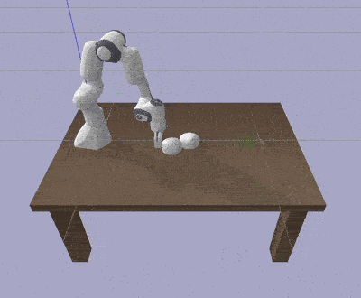 |
Obstacle awearness
|
Learning-Based Robot Planning with PPO and Diffusion Policy |
|
|
Implemented and compared Proximal Policy Optimization (PPO) and Diffusion Policy for robot motion planning and control, focusing on continuous action spaces in manipulation tasks. |
|
PPO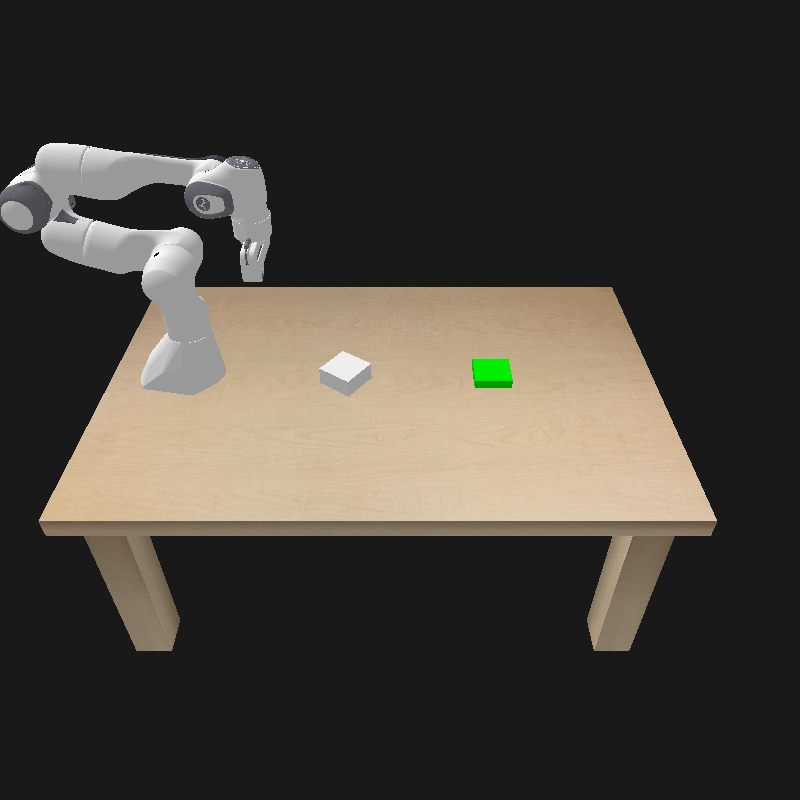 |
Diffusion Policy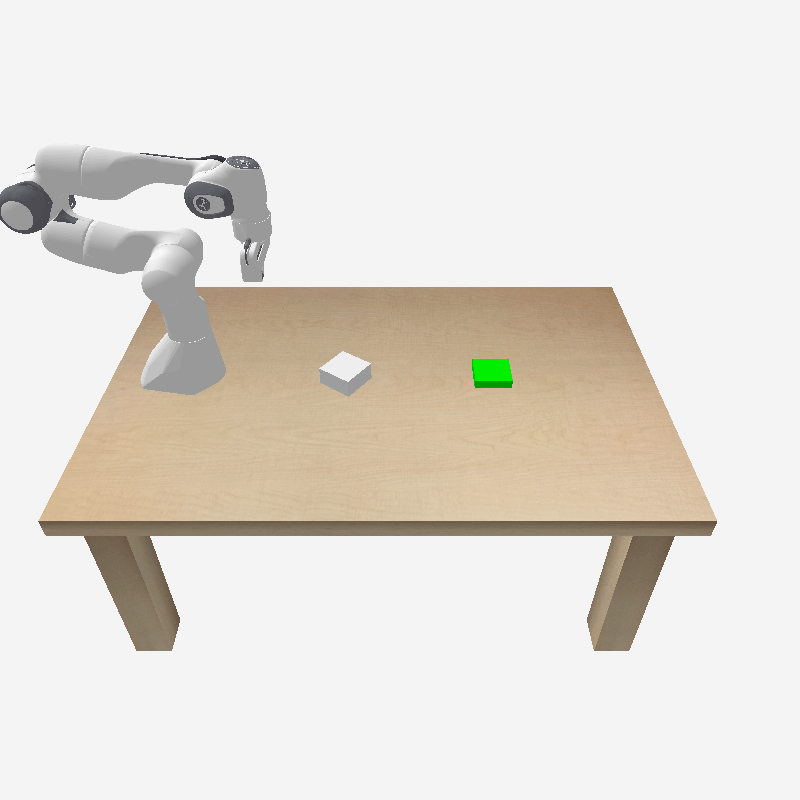 |
3D Semantic Perception for Robotics in Simulated Aircraft Cabins |
|
|
Developed a simulation pipeline in IsaacSim to enable robotic perception in cluttered cabin environments. |
|
3D Reconstruction
|
Environment in IsaacSim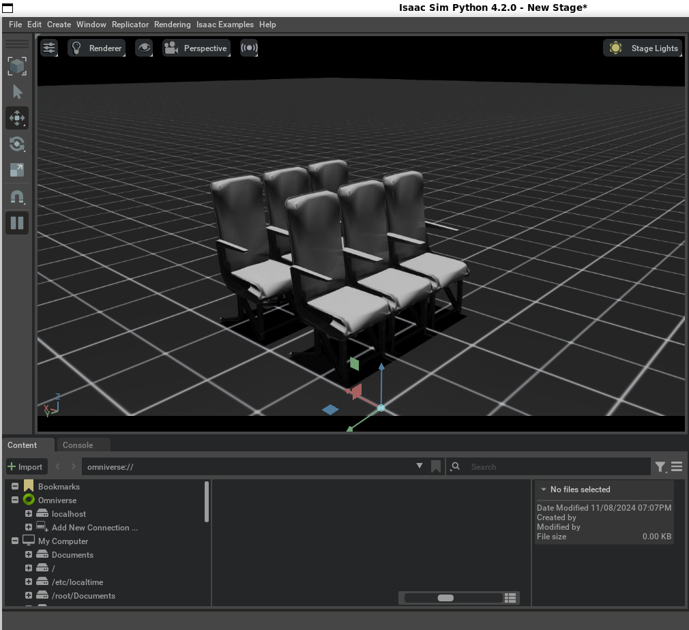 |
Vision-Based Robot Control in Latent Space |
|
|
Encoded raw image observations into a latent space using a Variational Autoencoder (VAE), then applied Model Predictive Path Integral (MPPI) control in the latent space. |
|
VAE Latent Control Demo |
State Image Input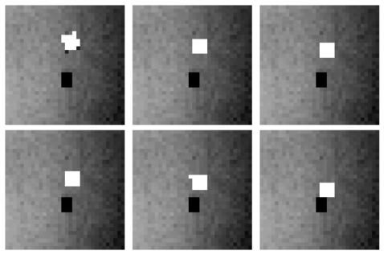 |
Gaussian Process Based Robot Pushing with Obstacle Avoidance |
|
|
Implemented Gaussian Process (GP) to capture uncertain system dynamics, and applied Model Predictive Path Integral (MPPI) to enable obstacle-aware object pushing under uncertainty. |
|
GP-Based Pushing Demo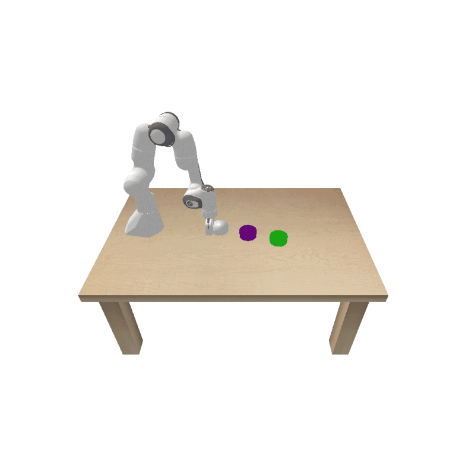 |
Prediction with GP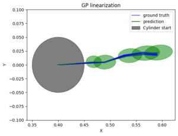 |
BotLab Autonomous Mobile Robot |
|
|
Differential-drive robot with 2D LiDAR for autonomous block transport and navigation, integrating SLAM and A-star planning. |
|
Auto-navigation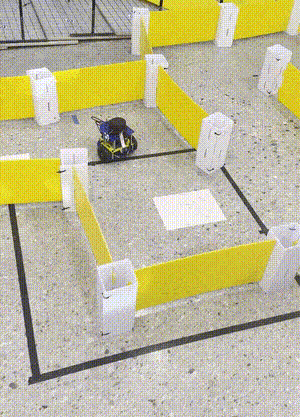 |
SLAM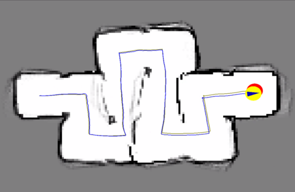 |
ArmLab 5-DOF Robotics Suite |
|
|
Building autonomy for a 5-DOF robotic arm using computer vision, forward and inverse kinematics, and path planning to manipulate various objects. |
|
Auto-stacking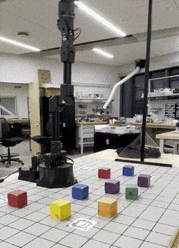 |
Environment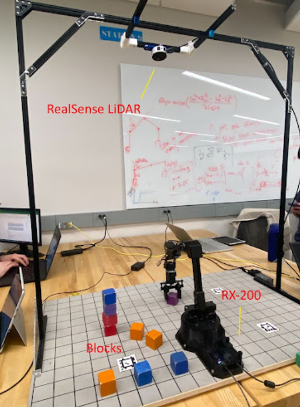 |
Sequential Manipulation in PyBullet |
|
|
Reasoning with pushing and grasping actions to build towers from objects in simulation using programmable primitives. |
|
| 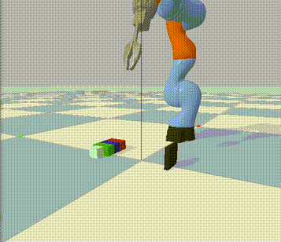 |
Autonomous Racing & Obstacle Avoidance |
|
|
Control strategies for high-speed racing with embedded obstacle avoidance mechanisms. |
|
| 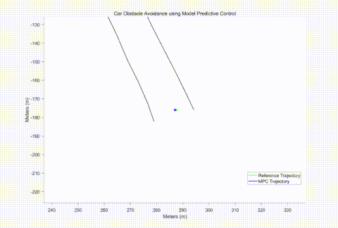 |